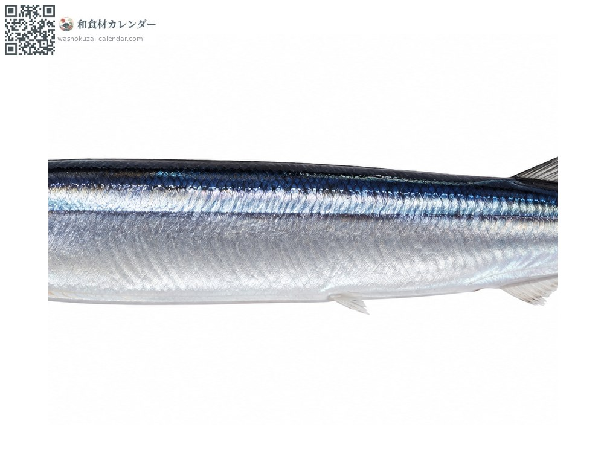
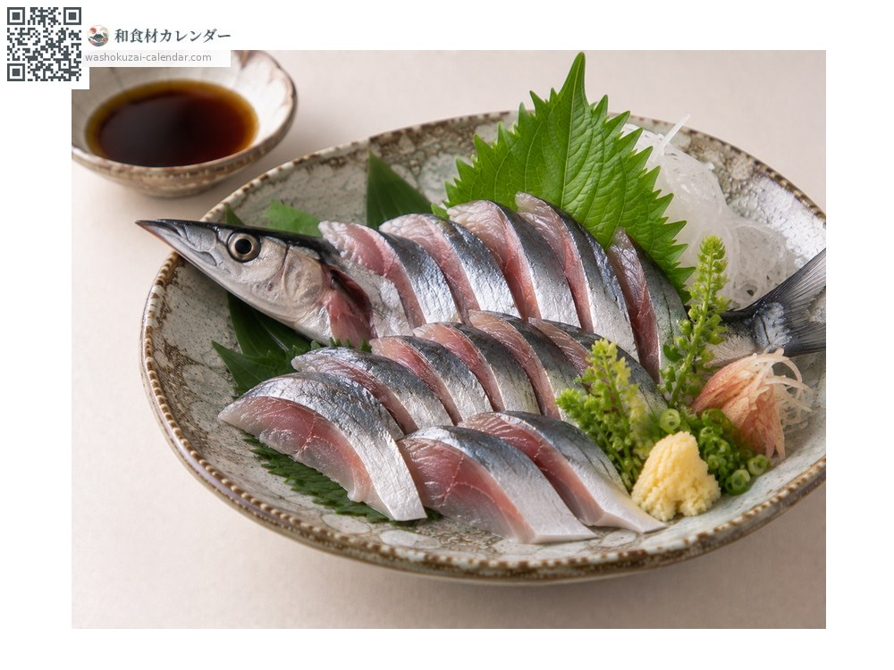
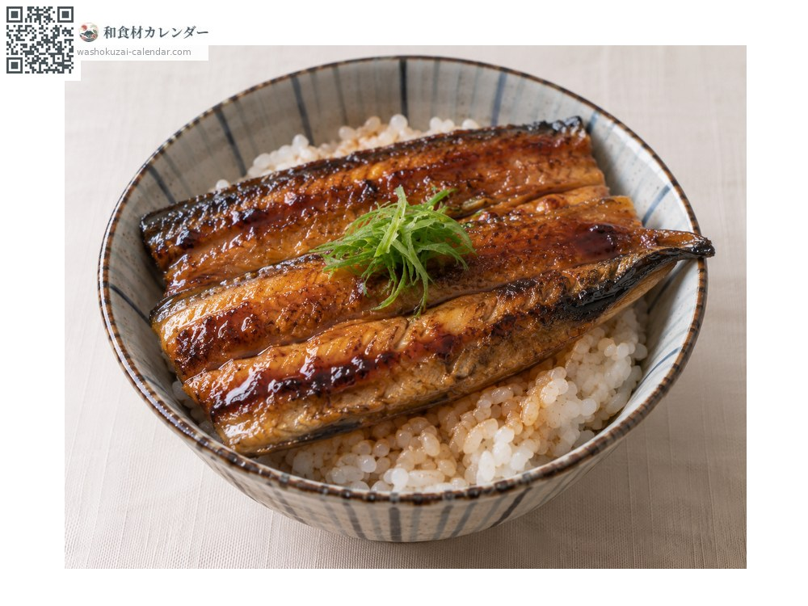
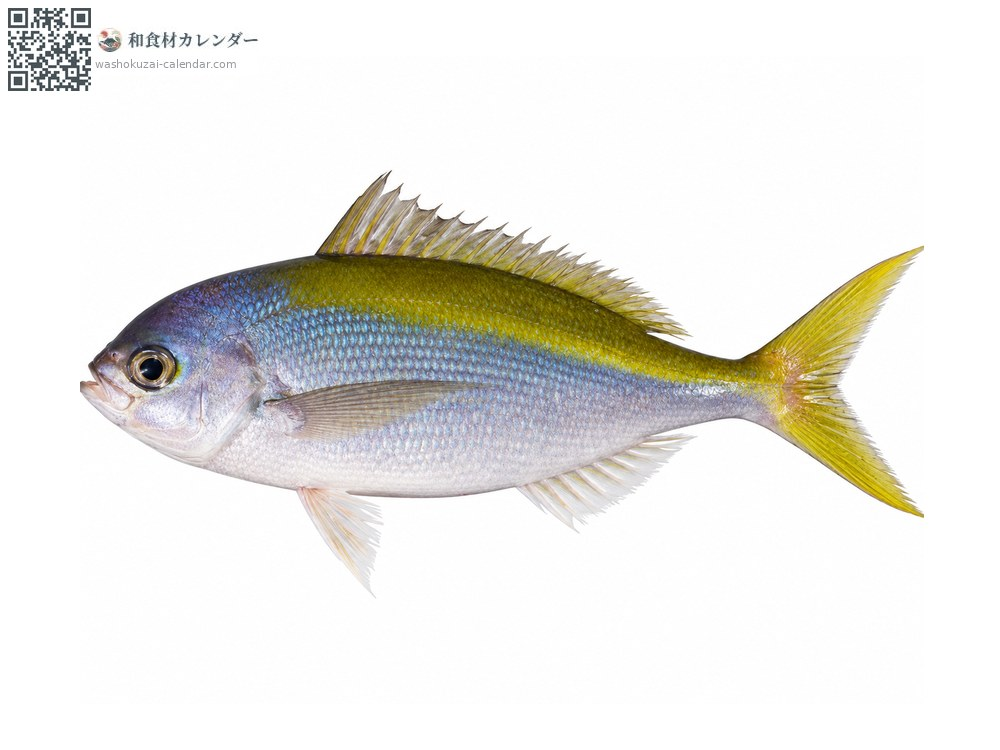

อาหารทะเล
ปลาซันมะ
サンマ さんま
อร่อยที่สุดในเดือน ก.ย., ต.ค.

ช่วงที่อร่อยที่สุด
ม.ค.
ก.พ.
มี.ค.
เม.ย.
พ.ค.
มิ.ย.
ก.ค.
ส.ค.
ก.ย.
ต.ค.
พ.ย.
ธ.ค.
ช่วงอร่อยที่สุดมีจำหน่าย
วิธีปรุง

ย่างเกลือ
ย่างไฟแรงแต่ห่างจากไฟ คนที่รู้จริงจะกินเครื่องในที่ขมด้วย

ซาชิมิ
ใช้เฉพาะตัวที่สดจริง เข้ากับซีอิ๊วขิงหรือกระเทียม

คาบายากิและลูกชิ้นปลา
แล่สามชิ้นย่างราดซอสหวานเค็ม ก้างเอาไปทำซุปลูกชิ้น
วิธีเลือก
ปลายปากออกเหลืองเล็กน้อย หลังเป็นประกายน้ำเงินเข้ม ท้องแน่น จับแล้วหัวไม่ตก
วิธีเก็บรักษา
เสียเร็ว ควรกินวันเดียวกัน หากจะแช่แข็งให้ควักไส้ออกก่อน
แหล่งผลิตหลัก
เกร็ดน่ารู้
เคยเป็นปลาราคาถูกที่คนทั่วไปกิน แต่ระยะหลังจับได้น้อยลงจนราคาสูงขึ้น สาเหตุมาจากเส้นทางอพยพเปลี่ยนและอุณหภูมิน้ำทะเลสูงขึ้น
วัตถุดิบที่อร่อยที่สุดในช่วงเดียวกัน
 ปลาชิมะอาจิ (ปลาสำลีแถบเหลือง)
ปลาชิมะอาจิ (ปลาสำลีแถบเหลือง) ปลาโคฮาดะ (ปลาตะลุมพุกญี่ปุ่น)
ปลาโคฮาดะ (ปลาตะลุมพุกญี่ปุ่น) ปลาซาบะ
ปลาซาบะ ปลาคัมปาจิ (ปลาหางเหลืองครีบยาว)
ปลาคัมปาจิ (ปลาหางเหลืองครีบยาว) ปลาคัตสึโอะ (ปลาโอ)
ปลาคัตสึโอะ (ปลาโอ) ทูน่าครีบเหลือง
ทูน่าครีบเหลือง ปลาเรนโกได (ปลาทรายแดงหลังเหลือง)
ปลาเรนโกได (ปลาทรายแดงหลังเหลือง)
ปลาอุเมอิโระ (ปลาสากหลังเหลือง)